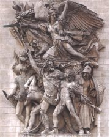
Rude: Odchod dobrovolníků
Co je Marseillaisa [marsejéza]?
|
FRANCOUZSKÝ ROMANTISMUS
Francie podporovala americké kolonie v jejich boji za nezávislost. Francouzi také opakovaně bojovali za změnu poměrů ve své zemi (Velká francouzská revoluce, červencová a únorová revoluce, Pařížská komuna).
Revoluční nadšení jim zůstalo vlastní až do současnosti, o čemž svědčí četné demonstrace a stávky.
Nejvýznamnějšími romantickými malíři byli Eugène Delacroix [ežen delakroa] (1798-1863) a Théodore Géricault [teodór žeriko] (1791-1824), autor dramatického obrazu Vor Medusy, který se zakládal na skutečné události – ztroskotání lodi Medusa. Sochař François Rude (1784-1855) vyzdobil Vítězný oblouk v Paříži reliéfem Odchod dobrovolníků s alegorickou postavou Marseillaisy. Antoine Louis Barye (1796-1875) vytvářel bronzové plastiky zvířat. Pierre-Jean David d’Angers [danže] (1788-1856) vytvořil pomník Grand Condé ve Versailles.
|
Historie
Vlnu evropských nepokojů rozpoutala Velká francouzská revoluce (1789-1794). Během napoleonských válek (1799-1815) ovládla Francie velkou část kontinentu, ubránila se jí pouze Anglie a Rusko. Za restaurace Bourbonů se měly poměry vrátit před rok 1789, ale červencová revoluce (1830) vynesla na trůn Ludvíka Filipa Orleánského. Během únorové revoluce (1848) byla vyhlášena 2. republika, ale moci se ujal Napoleon III. (1852-1860), který se prohlásil za císaře a začal pronásledovat revolucionáře
|
Victor Hugo (1802-1885)
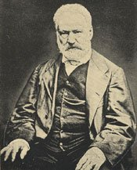
Victor Hugo [viktor igo] byl zprvu na straně vládnoucího rodu Bourbonů a krále Ludvíka Filipa, což mu zajistilo postavení uznávaného oficiálního autora i politika. Později začal podporovat revolucionáře (požaduje všeobecné volby a svobodu tisku). Po převratu Napoleona III. byl na Huga vydán zatykač. Zachránil se útěkem do Jersey, kde pobýval pod dohledem tajné policie. Po Napoleonově pádu se vrací do Paříže, podporuje komunardy a pokračuje v literární tvorbě. Na jeho pohřeb přišlo 200 000 Francouzů. Hugo napsal
romány Chrám Matky Boží v Paříži, Bídníci, Dělníci moře, Devadesát tři nebo Muž, který se směje. Jeho předmluva k divadelní hře Cromwell je považována za manifest romantismu. Vrcholným dramatem je Hernani.
V některých dílech se ohlašuje nastupující realismus.
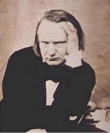
Hugo ve vyhnanství v Jersey
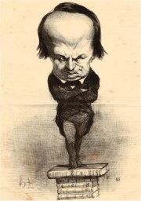
Honoré Daumier: Victor Hugo
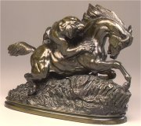
Barye: Kůň napadený tygrem
|
Victor Hugo: Chrám Matky Boží v Paříži
Hlavní postavou Hugova historického románu je Quasimodo, znetvořený zvoník pařížského kostela Notre Dame, kterého se v dětství ujal kněz Frollo. Frollo touží po cikánské tanečnici Esmeraldě. Chce, aby ji Quasimodo unesl, ale Esmeraldu zachrání kapitán Phoebus. Quasimodo skončí na pranýři, Frollo zavraždí Phoeba a zločin svede na Esmeraldu. Quasimodo, který se do Esmeraldy zamiloval, ukryje dívku v kostele, ale nepodaří se mu Esmeraldu zachránit. Román končí smrtí Frolla, Esmeraldy i Quasimoda.
Victor Hugo: Bídníci
Hlavním hrdinou románu Bídníci (Ubožáci) je trestanec Jean Valjean [žán valžán], který byl odsouzen za krádež chleba. Po 19 letech se vrací z galejí, ale opět se vydává na cestu zločinu – v domě biskupa Myriela, který mu nabídl střechu nad hlavou, ukradne stříbrné příbory. Když Valjeana zatknou, dobrácký biskup tvrdí, že mu stříbro daroval, a navíc mu přidá dva svícny... Ve Valjeanovi se pohne svědomí a stane se čestným člověkem.
Valjean vystupuje pod novým jménem Madeleine, zbohatne, stane se starostou a ujme se osiřelé Cosetty. Jediný, kdo ho stále podezřívá, je policejní inspektor Javert. Když policie zatkne domnělého Valjeana, odhalí svou pravou totožnost, aby nebyl odsouzen nevinný. Znovu se dostává na galeje, ale podaří se mu uprchnout a společně s Cosettou se skrývá před Javertem. V roce 1832 vypuknou v Paříži nepokoje a bojuje se na barikádách. Valjean zachrání život mladému republikánovi Mariovi, který miluje jeho svěřenkyni, a ušetří i Javerta odsouzeného k smrti. Mario si bere Cosettu za manželku, ale když se dozví o Valjeanově minulosti, přeruší s ním veškeré kontakty. Javert spáchá sebevraždu, protože nedokáže unést šlechetnost, kterou mu prokázal člověk, jehož celý život pronásledoval. Na smrtelném loži se Valjean smíří i s Mariem.
Hugova poezie
Velkou část Hugovy tvorby zaujímá poezie. Je velmi různorodá a nejlépe odráží básníkův myšlenkový vývoj. Značného ohlasu dosáhla sbírka Ódy a balady. Zpěvy východu odrážejí dobový zájem o orientální tematiku. Své pocity a myšlenky Hugo odhaluje ve sbírkách Podzimní listí, Vnitřní hlasy a Kontemplace. Ve vyhnanství napsal pamflet Napoleon Malý a sbírku Tresty, která se po tisících pašovala do Francie. V proslulém cyklu Legenda věků se rozhodl formou epických básní vyjádřit optimistické přesvědčení o vzestupu lidstva. Monumentální dílo zachycuje vývoj civilizace od jejích počátků až do Hugovy současnosti a končí vizemi 20. století.
|
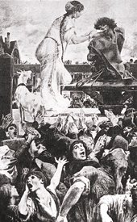
Esmeralda a Quasimodo
Charakterizuj hlavní postavy románu Chrám Matky Boží v Paříži – Quasimoda, Frolla, Esmeraldu a Phoeba.
Najdi v románu znaky romantismu.
Děj doplňují úvahové pasáže. Jakými otázkami se v nich Hugo zabývá?
Jakou roli hraje v Hugově románu katedrála Notre Dame?
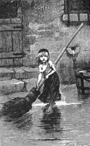
Dobová ilustrace k Bídníkům

Barye: Lev
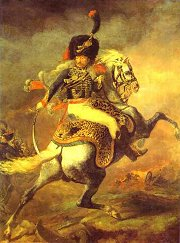
Géricault: Důstojník myslivců císařské gardy
Srovnej ukázky z Hugovy poezie.
Co má společného báseň Sociální otázka s románem Bídníci?
|
Alfred de Musset (1810-1857)
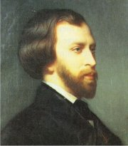
Musset [mise] psal díla s autobiografickými rysy.
Je autorem románu Zpověď dítěte svého věku,
divadelních her S láskou nejsou žádné žerty nebo Lorenzaccio a básnického cyklu Noci.
|
Alfred de Musset: Zpověď dítěte svého věku
Hlavní hrdina Mussetova románu Oktavius věří pouze v lásku, ale když ho milenka podvede s nejlepším přítelem, propadne „nemoci století“ – pocitu naprosté beznaděje. Hledá zapomnění ve zhýralém životě, až jeho srdce úplně otupí. Zamiluje se sice do mladé vdovy Brigity Pirsonové, ale svým cynismem nakonec nadějný vztah zničí. Milenci se přestěhují z venkova do Paříže, kde začne zoufalá Brigita hledat oporu u jiného muže. Oktavius ji opouští s rozhodnutím, že bude hledat útěchu ve víře v Boha.
Román je vyprávěn v 1. osobě a obsahuje autobiografické prvky. Ústřední zápletka vychází z Mussetova vztahu se spisovatelkou George Sandovou, která ho podváděla s dalším milencem.
|
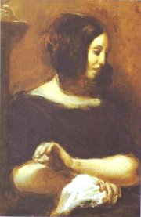
Delacroix: George Sandová
Jaký je Oktavius?
Co se dozvídáme o jeho milence a Desgenaisovi?
Co si o těchto postavách myslíš? Najdi pro své názory argumenty v textu ukázky.
|
Alexandre Dumas starší
(1802-1870)
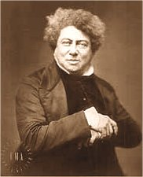
Spisovatel Davy de la Pailleterie se proslavil pod pseudonymem Alexandre Dumas [aleksándr dima, 2.p dimase]. Jeho spisy tvoří přes 250 svazků. Jenom Dumasovy Paměti čítají 20 svazků! Psal hlavně historické romány, které vycházely na pokračování v dobovém tisku. Nejznámější jsou Tři mušketýři, Hrabě Monte Cristo, Muž se železnou maskou, Královna Margot, Královnin náhrdelník, Černý tulipán nebo cyklus Paměti lékařovy. Oblíbené byly i jeho divadelní hry – Jindřich III. a jeho dvůr.
|
Alexandre Dumas st.: Tři mušketýři
Dobrodružný historický román Tři mušketýři se odehrává v 17. století. Chudý gaskoňský šlechtic d'Artagnan se uchází o místo v elitním sboru královských mušketýrů. Seznamuje se s Aramisem, Athosem, Porthosem a společně s těmito třemi mušketýry se snaží postavit intrikám kardinála Richelieua a jeho špiónů – mylady a hraběte Rocheforta, kteří chtějí zkompromitovat francouzskou královnu. Sílu přátelství mušketýrů vyjadřuje slavný výrok „Jeden za všechny, všichni za jednoho!“. Úspěch tohoto románu využil Dumas k sepsání dvou pokračování: Tři mušketýři po dvaceti letech a Tři mušketýři ještě po deseti letech.
Dumas spravoval jakousi „manufakturu“ na romány – najímal si neznámé autory, aby mu dodávali náměty. Ty dále upravoval a výsledek publikoval pod svým jménem, protože zaručovalo obchodní úspěch. Jeho nejbližším spolupracovníkem byl historik Maquet.
Další autoři a díla
Pierre-Jean de Béranger: Písně
Alphonse de Lamartine: Básnické meditace
Eugène Scribe: Sklenice vody
Alfred de Vigny: Osudy
George Sandová: Malá Fadetka, Indiana, Lélio, Consuela
Gérard de Nerval: Dcery ohně
Barbey d’Aurevilly: Ďábelské novely
|
Alexandre Dumas mladší
(1824-1895)
Také Dumasův syn se vydal na dráhu spisovatele. Byl ale méně úspěšný. Jeho nejznámější knihou je Dáma s kaméliemi, která posloužila Bizetovi jako předloha k jeho opeře Carmen.
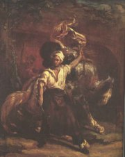
Géricault: Vývěsní štít
D'Artagnan je pověřen tajným posláním. Co musí udělat, aby pomohl královně?
Jak rozumíš Dumasovu výroku „historie je hřebík, na nějž věším své obrazy“?
|
Internetové stránky
Francouzští romantikové
Hugo
Hugo
Hugo
Hugo
Žák: Hugo: Hernani, článek
Hugo, karikatury
Romanticism is Dead! Long Live Romanticism!
Musset
Dumas
Dumas
Žák: Tři mušketýři, článek
Historie v obrazech 1789-1939
Barye: Slon
|
Doporučená četba
Béranger, P.: Na křídlech refrénu, přel. J.O.Fišer, Praha 1977
Deset francouzských novel, Československý spisovatel, Praha 1959 (Vigny, Nerval...)
Dumas, Alexandre: Hrabě Monte Cristo (2 svazky), přel. Tomášková, Vladislav, Albatros, Praha 1991
Dumas, A.: Tři mušketýři (2 svazky), přel. J.Janů, Albatros, Praha 1987
Fišer, Jan O.: Dějiny francouzské literatury 19. a 20. století 1, 1789-1870, Academia, Praha 1966
Fišer, J.O.: Francouzská literatura, Orbis, Praha 1964
Fišer, J.O.: Francouzská setkání, Odeon, Praha 1988
Hugo, Victor: Chrám Matky Boží v Paříži, přel. M.Tomášková, Odeon, Praha 1968
Hugo, V.: Bídníci, přel. Z.Pavlousková, Odeon, Praha 1984 (2 svazky)
Hugo, V.: Beru si slovo, Odeon, Praha 1985
Hugo, V.: Devadesát tři
Hugo, V.: Muž, který se směje
Kovařík, Jiří: D’Artagnan a ti druzí, Skutečné osudy románových hrdinů, Tempo, Praha 1998
Maurois, André: Lélia aneb Život George Sandové (román)
Maurois, A.: Olympio aneb Život Victora Huga, přel. B.Kaupová, Praha 1977 (román)
Maurois, A.: Tři Dumasové (román)
Musset, Alfred de: Dílo, SNKLU, Praha 1966 (Zpověď dítěte svého věku…)
Nerval, Gérard de: Chiméry, Odeon, Praha 1966
Pět romantických siluet, Poezie francouzského romantismu, přel. V.Mikeš, Československý spisovatel, Praha 1981 (Lamartine, Vigny, Hugo, Musset...)
Sand, G.: Consuela, přel. D.Janderová, Svoboda, Praha 1988
Spisy Victora Huga (7 svazků), SNKLHU
|
Připrav si referát o některé z uvedených knih nebo internetových stránek.
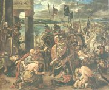
Delacroix: Vjezd křižáků do Konstantinopole
Géricault: Derby v Epsonu
|
|